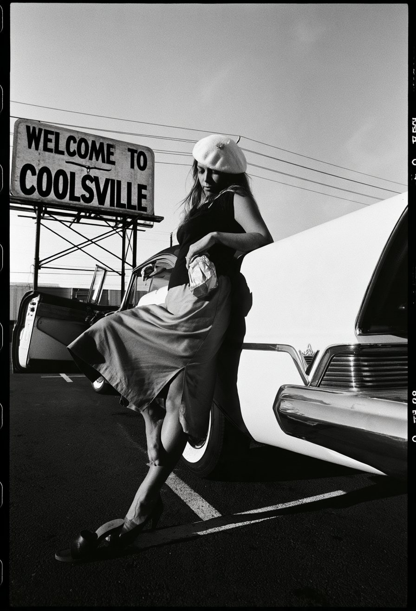
“Last Chance Texaco: Chronicles of an American Troubador is as rich and colorful as Jones’s best lyrics. It’s a classically American picaresque tale in which she ‘lived volumes long before I was famous.’”
“Rickie Lee Jones’ life became her art.”
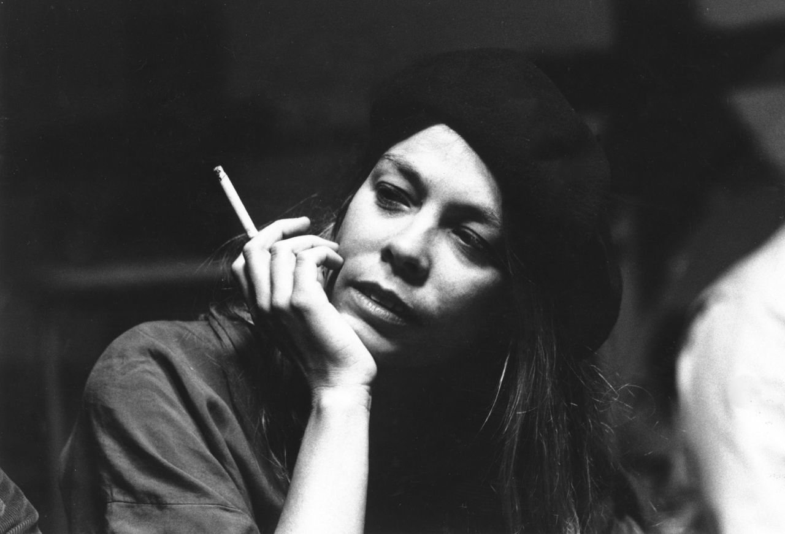
A runaway girl with a poet’s soul embarks on an unbelievable, pulp fiction-esque, rollercoaster ride through a magical and gritty 1970s America, ending up in L.A. and her unlikely transformation into a star.
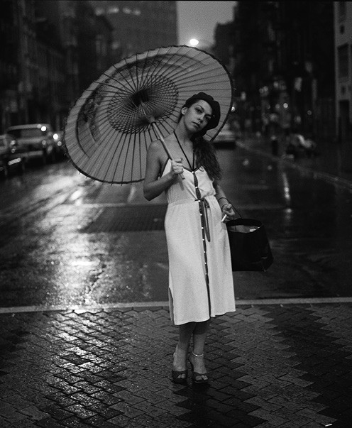
Two-time Grammy Award winning artist and recent Grammy nominee Rickie Lee Jones is known as one of the most iconic and influential women singer-songwriters in rock and jazz music.
In “Welcome to Coolsville”, filmmaker Michael Gramaglia uses Jones’ extraordinary recent memoir to craft a hybrid, beautifully cinematic biography.
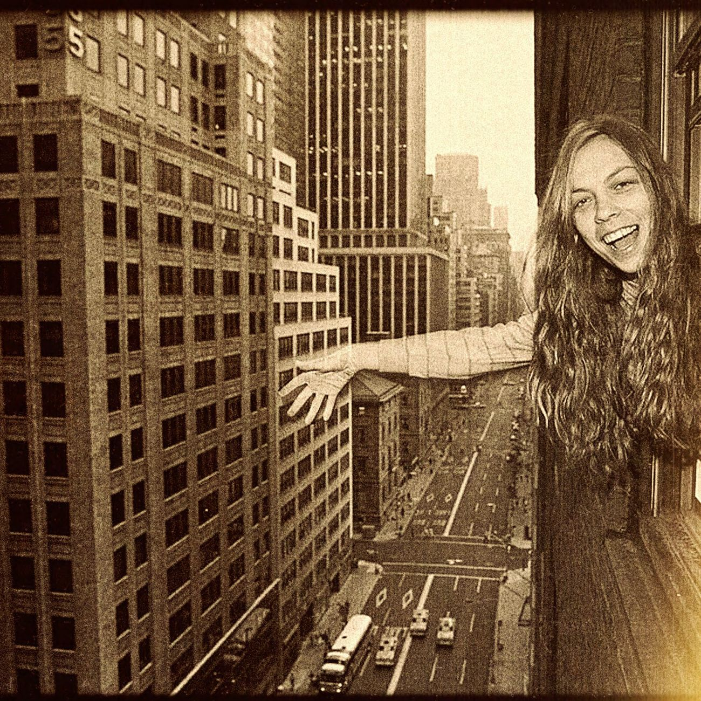
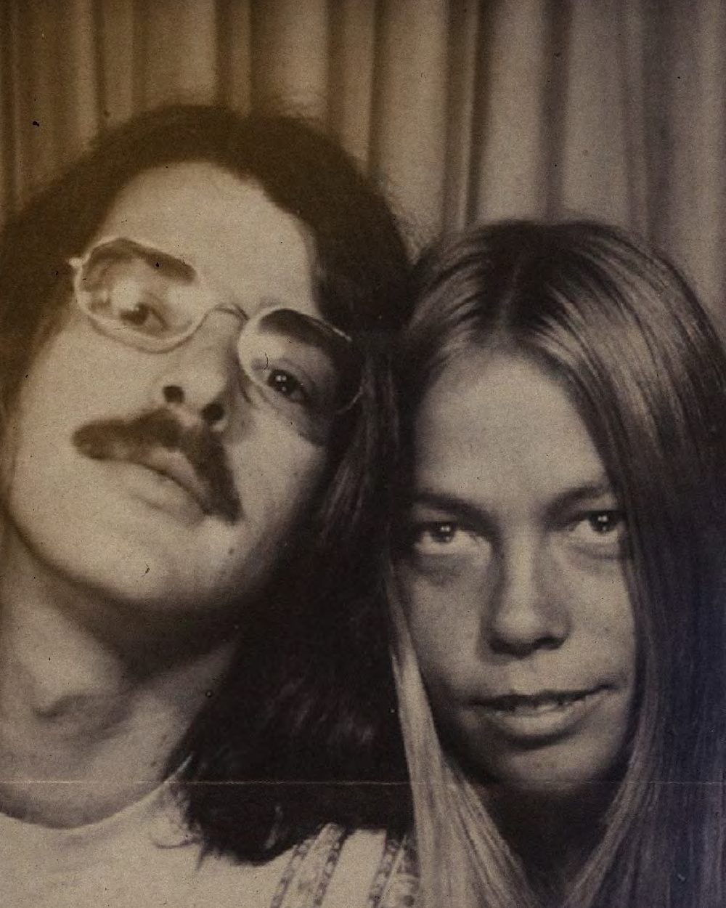
Taking us from the other worldly landscape of nascent Arizona of her youth, to living in a cave-based cult in Northern California.
From her formative time as a songwriter in the creative enclave of 70s Venice Beach to her haunting the empty historic Troubadour with the likes of Tom Waits and Chuck E. Weiss, from riding around the streets of L.A. in Chevys and old Cadillacs with Lowell George, or Dr. John, to her eventual meteoric rise to stardom.
Powered by a hypnotic and introspective narrative voice, we are carried along on an adventure of a lifetime.
Leaning on a rich archive of performances, photos, demo recordings, enhanced by scenes of cinematic recreation, A.I. rendering and found footage, a visually sweeping and spellbinding film emerges.
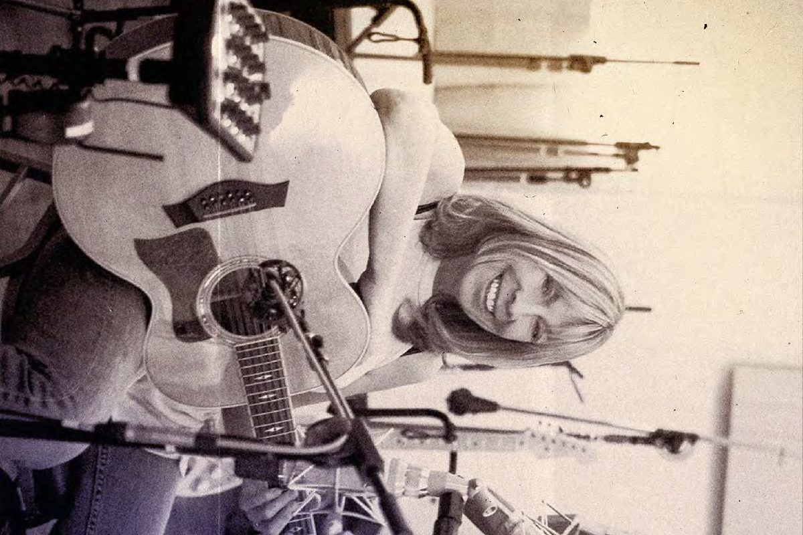
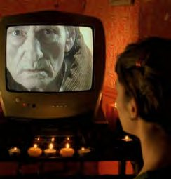
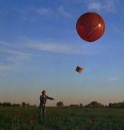
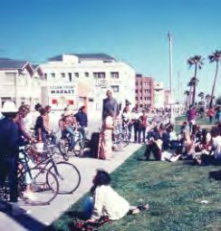
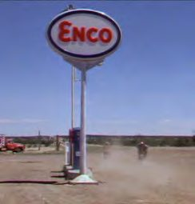
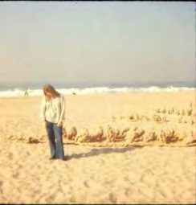
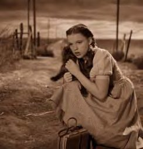
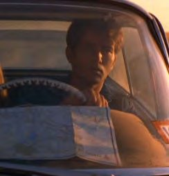
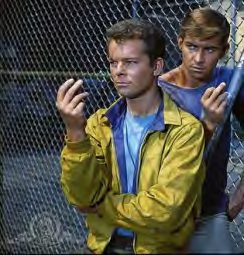
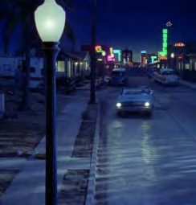
Michael Gramaglia (Director) directed and produced the critically acclaimed and Grammy Award nominated documentary End of the Century: The Story of the Ramones and Don’t Ask Me Questions: The Unsung Life of Graham Parker.
Michael was born into a family with a long film heritage. Early in his life he mentored at Cinecitta’ in Rome under Vittoria Storaro on Ishtar, Dick Tracy and The Sheltering Sky. Following those years, Michael had extensive behind the scenes experience in the East Coast music industry.
Soon after he combined his passions of film and music and made powerful films about extraordinary musical artists and their legacy. He has also made numerous corporate films for I.B.M. that focus on the role of technology in music, art and humanity in the modern world; and smaller projects for artists such as Loudon Wainwright III, Blondie and Secret Machines.
Is founded by award-winning producers Amy Hobby (What Happened, Miss Simone?, Secretary) and Lori Cheatle to produce music related documentary and narrative features.
Lori Cheatle (Producer) is a producer and executive producer of over 25 awardwinning films and the founder of Hard Working Movies, a director-driven production company with an appetite for bold, beautiful, high-profile narratives. The films she’s produced have screened at all the top international film festivals, in cinemas and on TV and major platforms worldwide.
Some titles include Dreaming Walls, which premiered at the Berlinale, is executive produced by Martin Scorsese and released by Magnolia Pictures and Hulu; Matanga/Maya/M.I.A. (dir. Steve Loveridge), about the pop star M.I.A. which won a Special Jury Award at Sundance and the IDA Award for Best Music Documentary; US Kids (dir. Kim Snyder, Sundance 2020, Greenwich Entertainment), winner of over a dozen festival and human rights awards; Kiki (dir. Sara Jordeno, IFC Films), which premiered at Sundance and won the Berlin Teddy Award; Captivated: The Trials of Pamela Smart (HBO/Sky Atlantic, directed by Jeremiah Zagar) which was released in over 100 countries; 51 Birch Street (by Doug Block, HBO), selected as a NYT 10 Best Film of the Year; Seven Songs for a Long Life (dir. Amy Hardie, nominated for a BAFTA); and others. Lori received the Sundance Amazon Producers Award.
“My deepest emotions are universal; the further inside myself I go, the closer I am to mankind…”
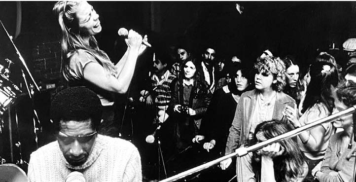